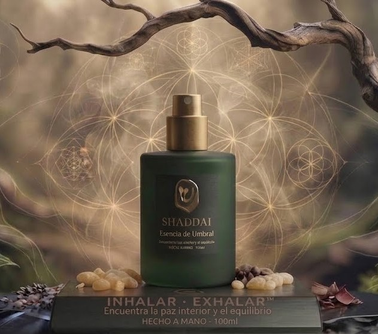
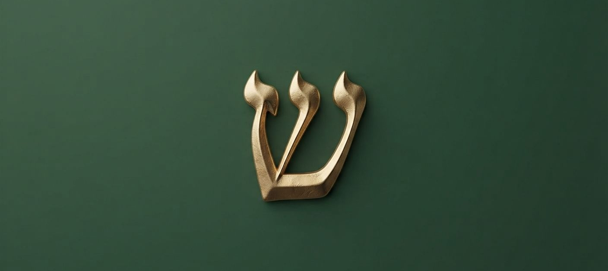

El origen
El punto donde todo comienza: el latido primero que habita en ti.
Una carga simbólica, etimológica y espiritual muy profunda.
El concepto de Shaddai encierra una carga simbólica, etimológica y espiritual muy profunda. Una sinergia artesanal de resinas y aceites ancestrales que conectan con lo esencial.
Tradicionalmente traducido como “Todopoderoso”, la palabra Shaddai conecta con conceptos primordiales como el origen, la fuente de vida, la provisión y el cuidado esencial. Representa aquello que nutre el alma y devuelve el equilibrio biológico y emocional.

El punto donde todo comienza: el latido primero que habita en ti.
Lo que nutre el alma y devuelve el equilibrio biológico y emocional.
Aquello que sostiene lo imprescindible: el cuidado profundo del ser.

En la cúspide de nuestra formulación se encuentra la letra hebrea Shin (ש), una de las presencias más místicas de la tradición ancestral. Representada como tres llamas ascendentes que convergen en un punto, la Shin encarna la esencia misma del umbral.
Simboliza la gran transición: el paso definitivo entre el ruido del mundo exterior y el silencio sagrado del interior. Es la puerta de entrada al momento presente y a la verdad inalterable del ser.